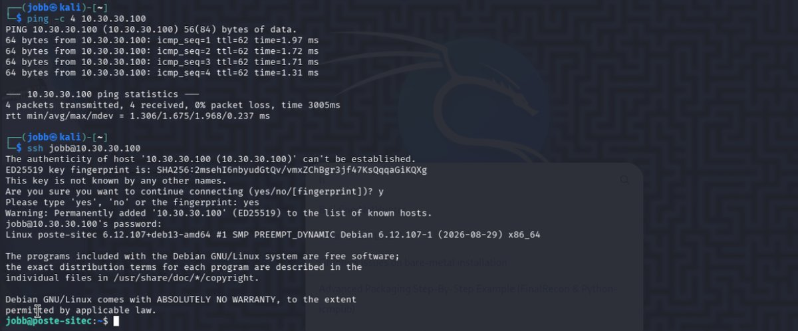
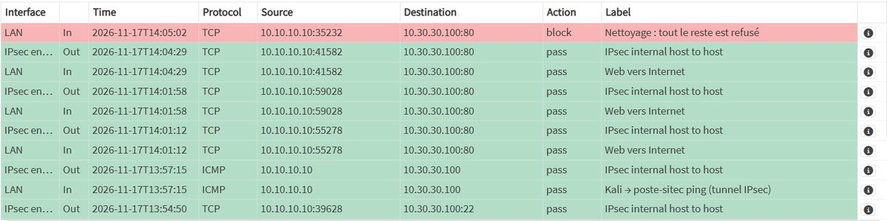
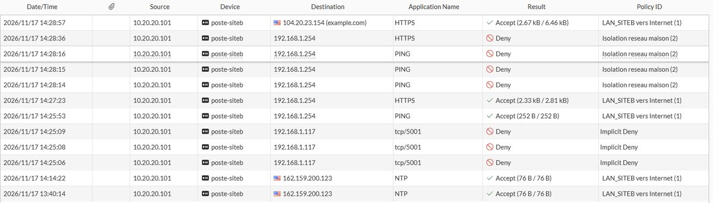

Premier problème
Le tunnel impossible
Avant de configurer quoi que ce soit, j'ai comparé ce que chaque pare-feu savait chiffrer. En licence d'évaluation, le FortiGate ne propose que DES, un algorithme qu'OPNsense refuse.
Plutôt que d'affaiblir le siège, j'ai ajouté une deuxième agence avec un Sophos, dont la licence gratuite accepte le chiffrement fort.

Les règles du Sophos, celle du tunnel en tête.
Moindre privilège
Deux flux autorisés, pas un de plus
Seule la machine Kali du siège peut administrer le poste de l'agence, en SSH et en ping. Chaque pare-feu contrôle son côté du tunnel ; les réponses reviennent grâce à la table d'états.
# OPNsense, sortie du siège
pass tcp 10.10.10.10 → poste agence :22
pass icmp 10.10.10.10 → poste agence
# Sophos, entrée de l'agence
accept Kali du siège → poste agence
# tout le reste
reject

Depuis Kali : ping et SSH à travers le tunnel (ttl=62, deux routeurs traversés).
Lecture des journaux
Une faille que mon test n'avait pas vue
Mon test vers un autre port était bien bloqué. Mais dans les journaux d'OPNsense, la connexion était autorisée côté siège : la règle « web vers Internet » acceptait n'importe quelle destination, agences comprises.
Je l'ai limitée à tout sauf les réseaux privés (! RESEAUX_PRIVES), puis j'ai revérifié dans les deux sens.

Journal d'OPNsense : avant la correction en vert, après en rouge.
Isolation
La même faille chez deux autres constructeurs
Les agences pouvaient joindre la box et le NAS de la maison. J'ai ajouté un refus explicite avant l'autorisation, en ligne de commande sur le FortiGate puis sur le Sophos, après avoir vérifié que la résolution DNS continuerait de fonctionner.
Trois constructeurs, trois façons de refuser : Connection refused, Packet filtered, Port Unreachable.

Journal du FortiGate : la faille, puis la correction.